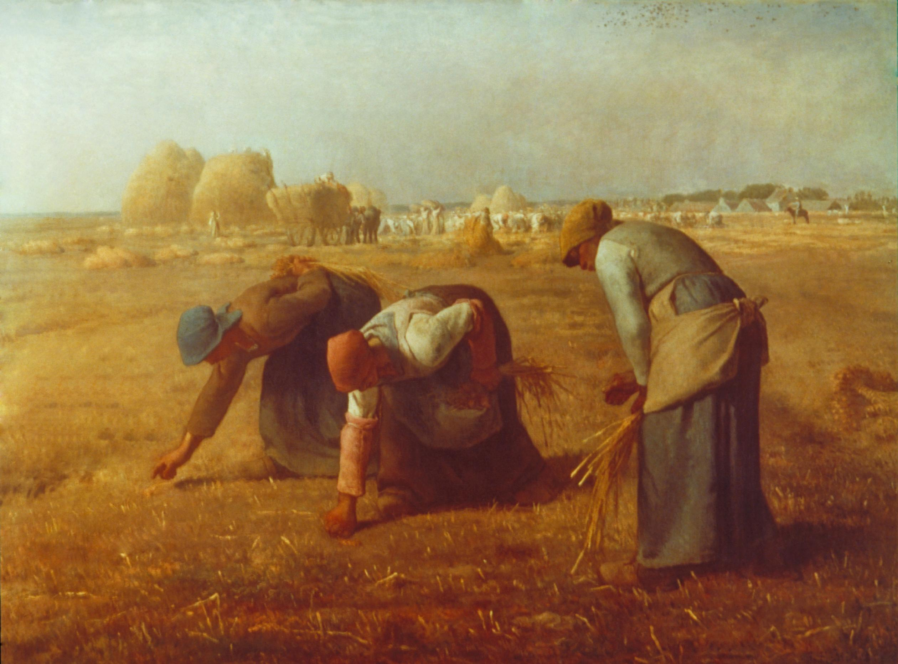

Сборщицы колосьев
Первое впечатление от полотна – группа измождённых людей под жарким солнцем тянет баржу, преодолевая силу течения великой русской реки. В ватаге – одиннадцать человек, и каждый из них тянет лямку, врезающуюся в грудь и плечи. По изорванным одеждам становится понятно, что на такую работу человека может толкнуть только крайняя бедность. У некоторых бурлаков рубахи настолько ветхие, что лямка попросту протёрла их насквозь. Однако люди упорно продолжают тащить за канат судно.